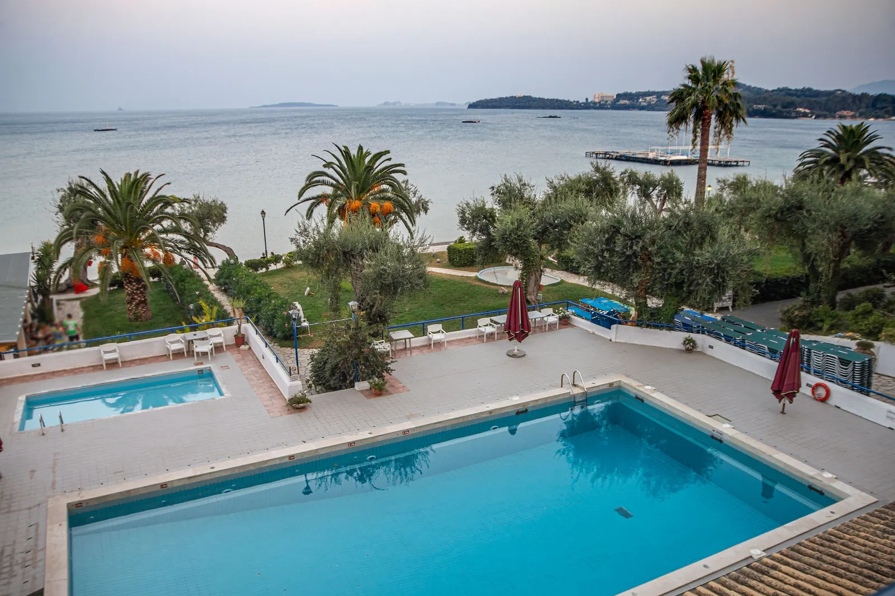
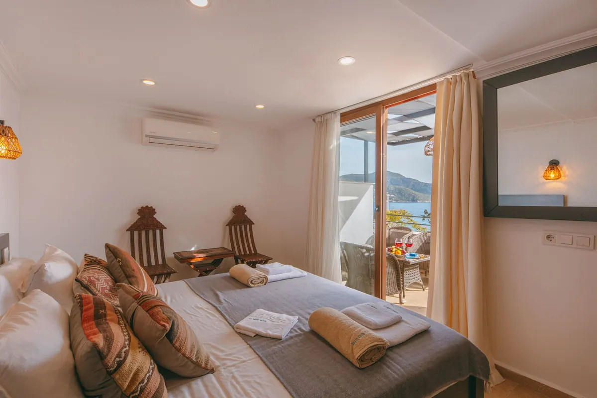
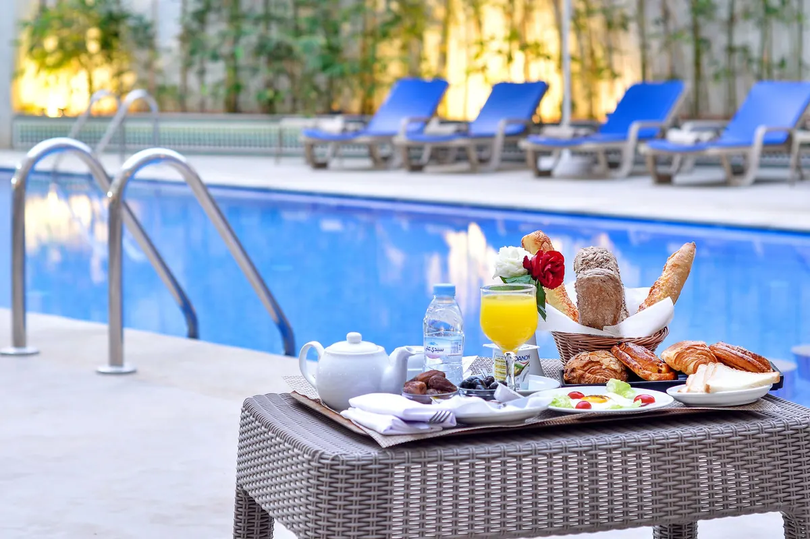
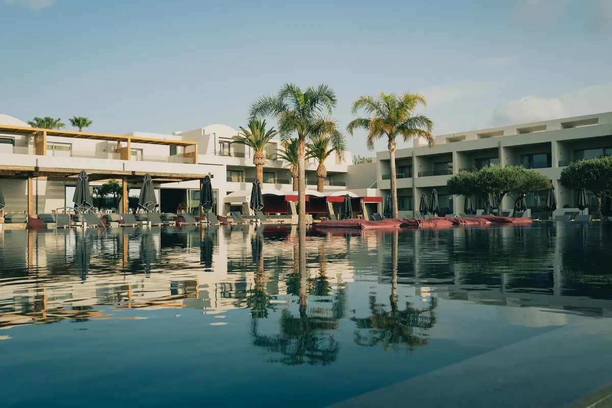

14 odalı butik otel · Kaleiçi
Havuz başında kahvaltı,
limana beş dakika.
Taş konakta 14 oda, avlu havuzu ve terasta serpme kahvaltı. Doğrudan rezervasyonda en iyi fiyat ve ücretsiz geç çıkış.
Butik otel · Kaleiçi / Antalya
Odalar ve fiyatlar
Gecelik fiyatlar temsilîdir, kahvaltı dahildir; sezona göre değişir.
- 01Standart çift kişilik2.400 TL'dentemsilî
18 m², avlu manzarası, duş.
- 02Deniz manzaralı oda3.600 TL'dentemsilî
22 m², balkonlu, liman ve körfez manzarası.
- 03Aile odası4.200 TL'dentemsilî
30 m², 2 yetişkin + 2 çocuk, ara kapılı.
- 04Konak süit5.900 TL'dentemsilî
Taş duvarlı, oturma alanlı, küvetli.
- 05Havalimanı transferi1.200 TLtemsilî
Tek yön, 4 kişiye kadar.
- 06Tekne turu (anlaşmalı)kişi başı 900 TLtemsilî
Kaleiçi limanından günlük tur.
Fiyatlar örnek işletmeye aittir. 3 gece ve üzeri konaklamada %10 indirim.



Hakkımızda
Konak hakkında
19. yüzyıl taş konağı, 2019'da restore edildi. Hadrian Kapısı'na 6, Kaleiçi limanına 5 dakika yürüme mesafesi.
Misafirlerimizin yarısı yabancı; mesajlara dört dilde, gece de cevap veriyoruz.
Ekip (örnek)
- Hande B.işletme müdürü
- Okan T.ön büro
- Sevim A.kahvaltı ve mutfak
- Gece resepsiyonuAyşe (yapay zekâ) + nöbetçi
Sık sorulanlar
Merak edilenler
Giriş ve çıkış saatleri?
Giriş 14:00, çıkış 11:00. Doğrudan rezervasyonda müsaitse geç çıkış ücretsiz.
Otopark var mı?
Kaleiçi'ne araç girişi sınırlı; 300 m mesafedeki anlaşmalı otoparkı kullanıyoruz.
Evcil hayvan kabul ediyor musunuz?
Küçük ırk köpek ve kediler, önceden haber vermeniz şartıyla kabul edilir.
İletişim
Bize ulaşın
- AdresKaleiçi, Muratpaşa / Antalya (örnek adres)
- SaatlerResepsiyon 7/24
- Telefon0242 ••• •• •• (örnek)
- WhatsAppasistanı deneyin ↓